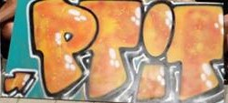
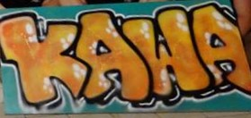

Si tu n'es pas déjà au courant, il te faut absolument l'accesoire que tu auras avec toi toute la semaine : la blouse. Elle te suivra dans toutes les activités de la semaine alors si tu ne l'as pas, tu auras des gros malus !
Les consignes sont les suivantes : à partir d'une blouse blanche classique, tu devras coudre ton prénom au dos de la blouse, et en fonction de ta promotion, la teindre d'une certaine couleur, coudre le numéro de promo ( sous le prénom ) et également ajouter des décoration dans un thème précis :
- Tu rentres en 4e année : Promo 54, orange pour les filles, violets pour les garçons, thème disco
- Tu rentres en 3e année : Promo 55, rose pour tout le monde, thème ferme
- Tu rentres en 2e année : Promo 56, thème USA en bleu et URSS en rouge, choisit ton camp !
Tu peux dessiner, peindre et broder ce que tu veux en plus tant que cela reste dans le thème alors n'hésite pas à la personnaliser à ta guise.
Avant de te le présenter, tu dois savoir que pour participer aux activités de la semaine, et ce pour une question d'assurance, tu dois être Amicaliste. La cotisation annuelle à l’Amicale des élèves (BDE de l'INSA) est de 17 € (dont 2€ te seront remboursé si tu payes en Lydia). Tu peux directement le faire sur le site de l'Amicale ou y aller sur place (bâtiment A1 : v. carte ).
Lydia, si tu ne sais pas encore ce que c'est, est une application qui te permet de rembourser tes potes, payer ta cotisation à l'Amicale, etc... Elle est également indispensable pour payer des bières au bar de l'école. Nous te conseillons donc vivement de la télécharger, elle te sera très utile tout au long de l'année.
Comme tu peux le voir, cette semaine sera assez chargée donc j'espère que tu arriveras motivé(e) et surout avec ta blouse !
Avec ta magnifique blouse sur le dos, la semaine commencera par un brave barbecue (photo non contractuelle) préparé par la Team One au PK ( v. carte ) où tu pourras apprendre à connaître notre équipe. Ensuite, ce sera l'heure du discours du directeur de l’INSA Toulouse, Mr Bertrand RAQUET puis la présentation de l’année par pré-orientation.
Les choses sérieuses commencent à 17h par une remise à niveau générale. Et à la fin, place à l’amusement avec la soirée Parrainage où tu pourras découvrir de façon originale ton parrain ou ta marraine qui sera là pour t’épauler tout au long de l’année pour t’apprendre les rudiments de la vie INSAïenne.
Ta matinée commencera avec une remise à niveau par pré-orientation (l’emploi du temps te sera donné le lundi) puis tu pourras te sustenter avec un barbecue puis nous t’amènerons en ville où t’attendra une après-midi chargée (pense à prendre des baskets !). Par groupe de 9-10, tu effectueras des activités pour gagner des points qui te feront gagner des lots à la fin de la journée ! En plus des activités, la Team One sera là pour te faire découvir la ville rose et te donner les bons plans !
Le soir, viens nous rejoindre pour une soirée au bar de l’INSA ( v. carte ), le P’tit Kawa où tu pourras continuer de rencontrer les autres étudiants ainsi que la fine équipe de la Team One, mais aussi, si tu le souhaites, découvrir le plaisir inimaginable procuré par la bière qu'on y propose. Attention, l'alcool est dangereux pour la santé. À consommer avec modération.
 Journée très studieuse avec des remises à niveau et les inscriptions administratives. Pour la soirée, nous te proposons une soirée en collaboration avec le club BEE (Bureau des étudiants étrangers). Tu pourras donc venir avec ton pique-nique au trou ( v. carte ), habillé aux couleurs des Ferias: la banda de l'INSA sera présente (photo non contractuelle).
On continue sur la lancée des remises à niveau avec la matinée du jeudi puis tu pourras te détendre avec une super après-midi sur le campus te permettant de connaître les bâtiments et le campus. Tu seras encore par groupe de 9-10 et tu feras plusieurs activités situées sur tout le campus. Les gagnants des activités gagnent des points et les grands gagnants auront le droit à un gros lot à la fin de l’après-midi !
Le soir, c'est Toulouse By night. On te fera décourvrir quelques bars du centre ville où il y fait bon vivre, et notamment la place Saint-Pierre.
La fin de la semaine est là et le grand départ arrive ! C’est à 17h que nous partirons pour ce week-end inoubliable : le WINAMP ! Prépare le maillot de bain et des affaires de sports pour participer aux activités que nous t’avons concocté (photo non contractuelle).
Ça c’est une surprise on ne vous dit rien !